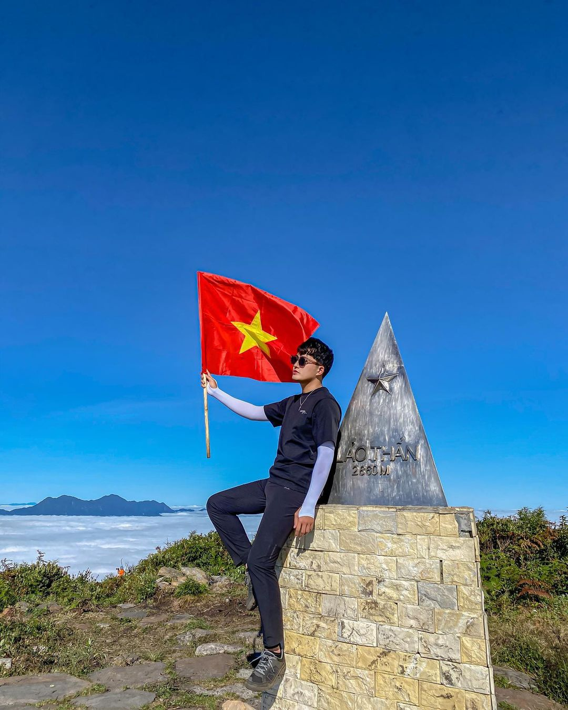
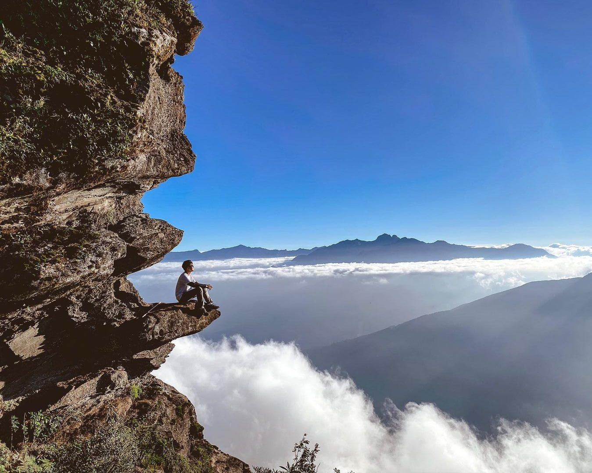
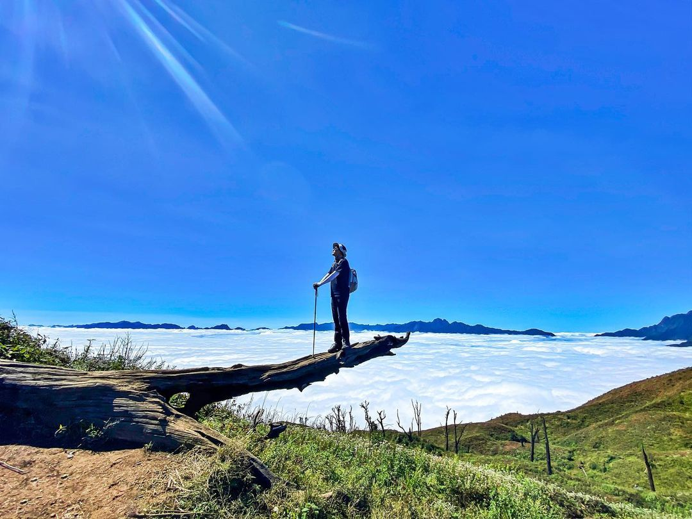

Lảo Thẩn được mệnh danh là "Nóc nhà Y Tý", tọa lạc tại bản Phìn Hồ, xã Y Tý, huyện Bát Xát, tỉnh Lào Cai. Nơi đây từ lâu đã trở thành thánh địa săn mây lý tưởng và đẹp bậc nhất vùng Tây Bắc, thu hút đông đảo những đôi chân đam mê xê dịch và yêu thích nhiếp ảnh.
Hành trình chinh phục Lảo Thẩn không quá khắc nghiệt mà mang vẻ đẹp thơ mộng, lãng mạn. Bạn sẽ rảo bước trên những đồi cỏ gianh bềnh bồng trong gió, băng qua vạt rừng dương xỉ và check-in cùng những thân cây khô vươn mình kiêu hãnh giữa đất trời. Cảm giác đứng trên mỏm đá nhô ra giữa không trung, đón bình minh rực rỡ ló rạng từ biển mây cuồn cuộn chắc chắn sẽ khiến bạn choáng ngợp.
Tour ghép khởi hành cuối tuần. Liên hệ Hidden Path để nhận lịch cụ thể từng tuần.
Đặc điểm nổi bật
Bao gồm & Không bao gồm
✓ Bao gồm
- Xe giường nằm đưa đón khứ hồi Hà Nội – Sa Pa
- Xe trung chuyển 16 chỗ từ Sa Pa vào bản Y Tý
- Hướng dẫn viên tận tâm, thông thuộc địa hình và điểm chụp ảnh
- Porter địa phương hỗ trợ khuân vác đồ chung và nấu ăn
- Toàn bộ các bữa ăn tiêu chuẩn trong suốt hành trình
- Chỗ ngủ tại lán gỗ kín gió (có chăn ấm, thảm cách nhiệt)
- Gậy leo núi chuyên dụng, nước uống đóng chai hàng ngày
- Huy chương vinh danh chinh phục đỉnh Lảo Thẩn
✗ Không bao gồm
- Chi phí cá nhân ngoài chương trình
- Đồ ăn vặt, nước ngọt, bia rượu gọi thêm
- Trang phục cá nhân và giày leo núi
- Phí tắm lá thuốc người Dao Đỏ (tùy chọn)
- Bảo hiểm du lịch cá nhân
Lịch trình tour chinh phục Lảo Thẩn (2N1Đ)
22h00: Xe giường nằm chất lượng cao của Hidden Path bắt đầu đón quý khách tại điểm hẹn ở Hà Nội. Trưởng đoàn (Guide) điểm danh, sắp xếp chỗ ngồi và phổ biến ngắn gọn về chuyến đi. Quý khách chìm vào giấc ngủ êm ái trên xe, chuẩn bị tinh thần và thể lực cho hành trình ngày mai.
Bữa ăn: Không. (Quý khách vui lòng tự túc ăn tối trước khi lên xe).
Nghỉ đêm: Ngủ đêm trên xe giường nằm.
05h00: Xe tới trung tâm thị xã Sa Pa. Đoàn vệ sinh cá nhân, tận hưởng cái lạnh sương mù đặc trưng và dùng bữa sáng nóng hổi. Sau đó, toàn đoàn gửi lại đồ đạc không cần thiết tại phòng chờ.
07h30: Lên xe trung chuyển di chuyển chặng đường khoảng 80km vào bản Phìn Hồ (Y Tý). Cung đường đưa bạn đi qua những thửa ruộng bậc thang tuyệt đẹp của Mường Hum, Dền Sáng.
10h30: Đến điểm trekking (Trang trại rau chân núi). Trưởng đoàn chia đồ cho Porter, khởi động kỹ càng và chính thức bắt đầu hành trình. Đường leo ngày 1 chủ yếu là đồi cỏ thoai thoải, cây bụi thấp và đón gió lộng.
12h00: Đoàn dừng chân nghỉ ngơi dưới bóng râm, thưởng thức bữa trưa picnic dã ngoại nạp năng lượng.
16h00: Đến lán nghỉ ở độ cao 2.400m. Quý khách nhận chỗ, cất đồ đạc. Nếu thời tiết đẹp, cả đoàn sẽ cùng nhau ra các mỏm đá gần lán để chiêm ngưỡng khoảnh khắc hoàng hôn nhuộm đỏ cả một vùng biển mây bềnh bồng.
18h30: Quây quần bên mâm cơm nóng hổi với đặc sản lợn bản nướng, gà đồi, rau rừng thơm phức. Nhâm nhi chút rượu táo mèo ấm bụng và ngắm bầu trời đêm đầy sao.
Bữa ăn: Sáng, Trưa, Tối.
Nghỉ đêm: Ngủ tại lán gỗ tập thể của người dân bản địa (đã có đủ chăn gối cách nhiệt ấm áp).
04h30: Đoàn thức dậy từ tinh sương, ăn nhẹ lót dạ và mang theo đồ đạc gọn nhẹ nhất, bật đèn pin đội đầu bắt đầu chặng leo cuối cùng để săn bình minh.
06h00: Chạm tay vào chóp inox Lảo Thẩn 2.860m! Ánh mặt trời bắt đầu ló rạng, chiếu những tia nắng vàng ươm lên biển mây đặc quánh dưới chân. Cảm giác mọi mệt mỏi tan biến hoàn toàn. Đoàn thỏa sức tạo dáng tại các "góc sống ảo" thần thánh như mỏm đá câu cá, thân cây sống ảo.
08h00: Trở về lán thu dọn hành lý cá nhân, thưởng thức bữa sáng chính (thường là mì tôm trứng nóng hổi hoặc phở bò) rồi bắt đầu hành trình hạ độ cao, xuống núi.
12h00: Về đến chân núi bản Phìn Hồ. Lên xe trung chuyển quay trở lại Sa Pa.
15h30: Về tới Sa Pa. Quý khách đi tắm lá thuốc thảo mộc của người Dao Đỏ để xua tan nhức mỏi, phục hồi cơ bắp (Chi phí tự túc). Thời gian còn lại quý khách tự do dạo chơi quanh thị xã.
18h30: Đoàn liên hoan bữa tối bằng đại tiệc lẩu cá hồi, cá tầm đặc sản, cùng nâng ly chúc mừng chuyến săn mây thành công rực rỡ.
22h30: Lên xe giường nằm khởi hành về Hà Nội. Khoảng 04h30 sáng hôm sau sẽ có mặt tại điểm đón ban đầu. Kết thúc hành trình, xin chào và hẹn gặp lại!
Bữa ăn: Sáng, Trưa, Tối.
Độ khó
Tour leo núi Lảo Thẩn được đánh giá ở mức Trung bình (2/5) – Cung đường chủ yếu là đồi cỏ dốc thoai thoải, ít dốc đứng trơn trượt, thời gian di chuyển ngắn. Rất phù hợp với những người mới leo núi lần đầu, dân văn phòng ít vận động, các gia đình và cả trẻ em có thể lực tốt.
Chuẩn bị trước tour
Thư viện ảnh


